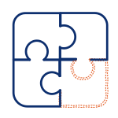

Workflow Consulting for Logistics
We go inside your operation, find where things fall apart, and build systems that hold — so your team can handle twice the volume without twice the errors.
Sound familiar?

Service Process
We don't sell you tools. We sit with you, untangle the process, then build a system that actually runs.
Interviews, observation, and root-cause analysis. Deliverable: a clear diagnosis report.
Database architecture, SOP restructuring, interface wireframes — logic first, tools second.
Airtable implementation, automation workflows, and user testing with real team members.
Operations manual, training sessions, and full handover — your team runs it independently.
What We Do
End-to-end consulting and implementation — from diagnosing the problem to handing over a working system.
We observe how your operation actually runs, pinpoint where orders slip through the cracks, and deliver a concrete action plan.
CRM, OMS, and FIN modules built on Airtable — orders, clients, and financials in one place, not scattered across spreadsheets.
Turn tribal knowledge into documented, structured workflows. New staff ramp up faster. Institutional knowledge stays when people leave.
Interfaces built around how your team actually works, with full training and an operations manual — so the system gets used.
Repetitive tasks automated via Make and Airtable Automation. Less manual checking, fewer handoff errors, more time on what matters.
Book a free 30-minute process call. No prep needed — just tell us what's breaking down.
Book a call →Contact
In 30 minutes, tell us what is slowing your operation down.
No preparation needed - just share your current workflow challenges.
Or email us directly at help@dghm.tw